mesoscale
Tutorial
The mesoscale module provides methods for clustering one set of nodes in a heterogeneous interaction network based on their shared interactions with nodes in another node set. The clustering methods employed automatically learn the number of clusters from the heterogeneity in the interaction data to find the mesoscale representation.
New package contributions can incorporate other algorithms for understanding the mesoscale structure of interaction networks.
Currently, the module contains the clustering.py file, which includes:
bipartite_communities: Identifies communities in a bipartite network by optimizing a Minimum Description Length (MDL) objective that modifies the microcanonical stochastic block model for the intended clustering task.
The MDL bipartite community detection method bipartite_communities (custom developed for the HINA package) finds a community partition of the nodes in the first node set using an information theoretic objective function that automatically selects for the optimal number of clusters. This objective scores a partition of the nodes according to how well it allows for the transmission of the bipartite graph while exploiting redundancies in the edges coming from members of the same community. It develops a description length objective by breaking the information transmission process into three steps: (1) Transmit community labels of nodes in the first set; (2) Transmit total edge weight contributions from each of the communities; (3) Transmit weights of each edge from Set 1 to Set 2 (the graph) given the constraints imposed by (1) and (2). Following these steps, the objective we use is:
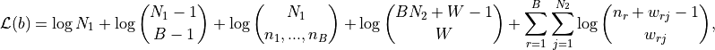
- where:
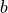 is a partition of the nodes in the first node set into 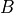 non-empty communities such that 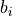 is the community of node
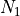 and 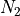 are the sizes of the first node set and second node set respectively
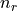 is the size of community 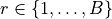
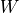 is the total weight of the edges in the bipartite graph
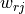 is the total weight of the edges from nodes in community to node 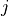 in the second node set
The method optimizes this MDL objective approximately using a fast agglomerative scheme in which we start with every node in its own cluster and iteratively merge the pair of communities that produces the greatest decrease to the description length until all nodes are grouped together. Afterwards, we scan over all solution candidates to identify the MDL-optimal partition.
Inputs for bipartite_communities:
G: A bipartite network represented as a set of tuples 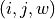 representing edge between nodes and of weight/frequency
 .
.fix_B: Fixes the number of clusters at specified value (optional, if None, the algorithm determines it automatically).
Outputs include:
Cluster labels: A dictionary mapping nodes to their respective cluster labels.
Compression ratio: The description length divided by the naive description length, indicating the effectiveness of the inferred community structure.
mesoscale
This module provides methods for detecting mesoscale structures in bipartite interaction networks.
Function |
Description |
|---|---|
Identifies bipartite communities by optimizing the MDL objective. |
Reference
Description: Optimizes an MDL objective to find bipartite communities in the network.
Parameters:
- G: A weighted edge set represented as tuples
(i, j, w_ij), wherew_ijis a positive integer. - fix_B: Fixed number of clusters (optional). If
None, the number of clusters is learned automatically.
- Returns:
dict: Dictionary mapping nodes to their respective community labels.
float: Compression ratio (description length with inferred communities divided by naive description length).
Demo
Example Code
This example demonstrates how to use bipartite_communities for clustering nodes in a bipartite network.
Step 1: Import necessary libraries
import pandas as pd
from hina.individual import get_bipartite
from hina.mesoscale.clustering import bipartite_communities
Step 2: Define the bipartite graph
We define a bipartite graph based on the `synthetic_data_simple’ example file.
df = pd.read_csv('synthetic_data_simple.csv')
G = get_bipartite(df,'student id','task')
Step 3: Compute bipartite communities using MDL optimization
We identify communities in the bipartite network by minimizing the MDL objective.
community_labels, compression_ratio = bipartite_communities(G)
print("Community Labels, B learned:\n", community_labels,'\n')
print("Compression Ratio, B learned:\n", compression_ratio)
Step 4: Apply clustering with a fixed number of clusters
If desired, we can fix the number of clusters manually.
community_labels_fixed, compression_ratio_fixed = bipartite_communities(G, fix_B=2)
print("Community Labels, B=2:\n", community_labels_fixed,'\n')
print("Compression Ratio, B=2:\n", compression_ratio_fixed)
Example Output
Community Labels, B learned:
{'student_3': 2, 'student_2': 0, 'student_26': 1, 'student_24': 0, 'student_0': 1, 'student_20': 3, 'student_18': 1, 'student_9': 0, 'student_16': 1, 'student_17': 0, 'student_7': 3, 'student_21': 1, 'student_14': 0, 'student_15': 1, 'student_29': 0, 'student_22': 0, 'student_5': 1, 'student_6': 1, 'student_25': 3, 'student_8': 2, 'student_28': 2, 'student_23': 2, 'student_4': 0, 'student_10': 1, 'student_1': 1, 'student_27': 0, 'student_13': 2, 'student_19': 0, 'student_12': 0, 'student_11': 1}
Compression Ratio, B learned:
0.7439771231064406
Community Labels, B=2:
{'student_3': 'Merge_at_Beq_4', 'student_2': 'Merge_at_Beq_3', 'student_26': 'Merge_at_Beq_3', 'student_24': 'Merge_at_Beq_3', 'student_0': 'Merge_at_Beq_3', 'student_20': 'Merge_at_Beq_4', 'student_18': 'Merge_at_Beq_3', 'student_9': 'Merge_at_Beq_3', 'student_16': 'Merge_at_Beq_3', 'student_17': 'Merge_at_Beq_3', 'student_7': 'Merge_at_Beq_4', 'student_21': 'Merge_at_Beq_3', 'student_14': 'Merge_at_Beq_3', 'student_15': 'Merge_at_Beq_3', 'student_29': 'Merge_at_Beq_3', 'student_22': 'Merge_at_Beq_3', 'student_5': 'Merge_at_Beq_3', 'student_6': 'Merge_at_Beq_3', 'student_25': 'Merge_at_Beq_4', 'student_8': 'Merge_at_Beq_4', 'student_28': 'Merge_at_Beq_4', 'student_23': 'Merge_at_Beq_4', 'student_4': 'Merge_at_Beq_3', 'student_10': 'Merge_at_Beq_3', 'student_1': 'Merge_at_Beq_3', 'student_27': 'Merge_at_Beq_3', 'student_13': 'Merge_at_Beq_4', 'student_19': 'Merge_at_Beq_3', 'student_12': 'Merge_at_Beq_3', 'student_11': 'Merge_at_Beq_3'}
Compression Ratio, B=2:
0.7509732725277739
Paper Source
If you use this function in your work, please cite: